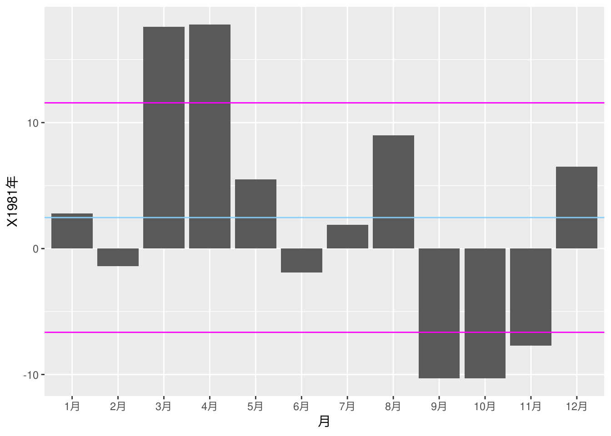
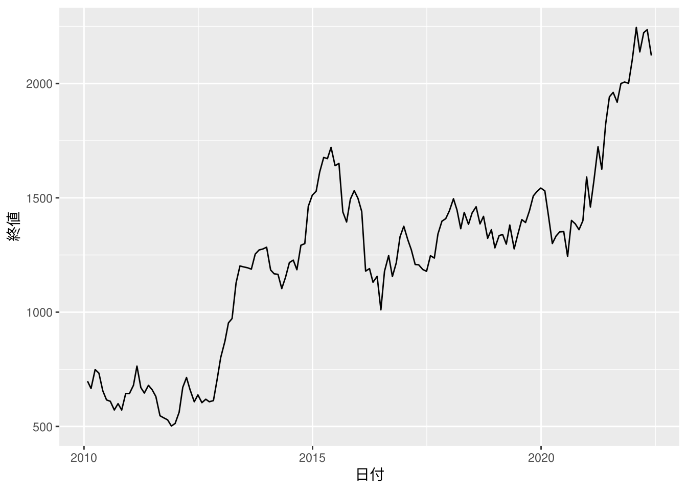
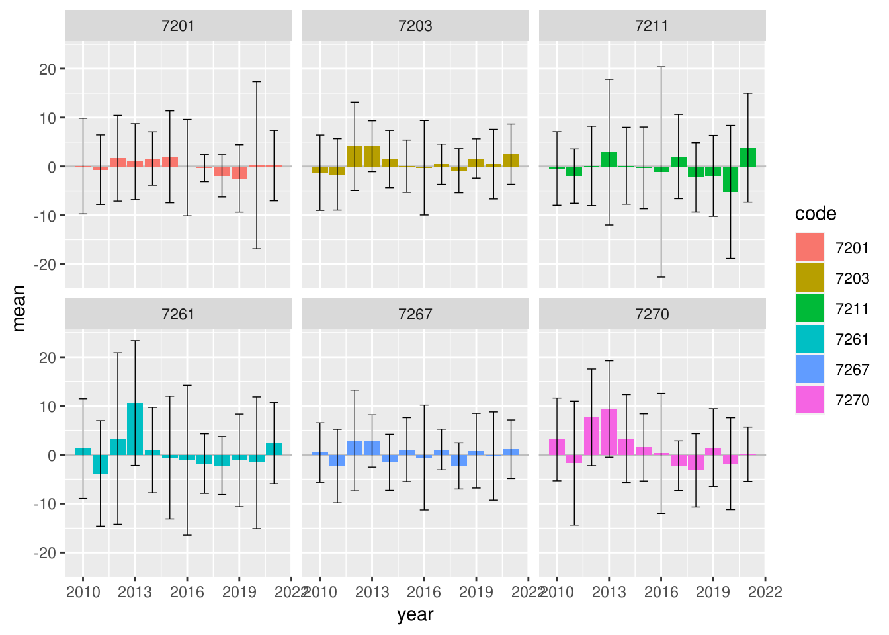

5.1 株の平均収益率とは何か？
株価の変動を利用して得られる収益は「キャピタルゲイン」と呼ばれます。キャピタルゲインを目当てとした株取引で重要になる指標のひとつに「収益率」があります。毎月の終値が前月の終値に対して、値上がった、または、値下がった率を「月次収益率」といいます。「月次平均収益率」は、月次収益率の一年間（十二ヶ月）単位で平均した値になります。
5.2 平均収益率だけでは、優良な投資かどうかは判断できない
Code
"./data/P56_ 図表5-3.csv" %>%
read.csv() %>%
df_print()月次平均収益率を求める
"./data/P56_ 図表5-3.csv" %>%
read.csv() %>%
dplyr::summarise_if(is.numeric, mean) %>%
round(digits = 2) %>%
df_print()月次平均収益率の標準偏差を求める
"./data/P56_ 図表5-3.csv" %>%
read.csv() %>%
dplyr::summarise_if(is.numeric, SD) %>%
round(digits = 2) %>%
df_print()
5.3 ボラリティが意味するところ
ボラリティ（予想変動率）とは標準偏差、つまり平均値からのブレ（バラツキ）のことです。例えば1981年の月次平均収益率は\(2.46\%\)、標準偏差は\(9.11\%\)なので、概ね下図のマゼンタ色のラインの間で変動していると想定できます。
1981年の月次収益率
"./data/P56_ 図表5-3.csv" %>%
read.csv() %>%
dplyr::mutate(月 = forcats::fct_inorder(月)) %>%
ggplot2::ggplot(ggplot2::aes(x = 月, y = X1981年)) +
ggplot2::geom_bar(stat = "identity") +
ggplot2::geom_hline(yintercept = 2.46, colour = "lightskyblue") +
ggplot2::geom_hline(yintercept = c(2.46 + 9.11, 2.46 - 9.11),
colour = "magenta")
練習問題
（省略）
実際の株価で計算してみる
実際に株探というサイトから某社の月次株価一覧を取得して月次平均収益率を計算してみます。
サイトから株価データを取得する
library(tidyverse)
library(rvest)
site_url <- "https://kabutan.jp/stock/kabuka?code=7203&ashi=mon&page="
pages <- c(1:5)
xpath <- '//*[@id="stock_kabuka_table"]/table[2]'
stock <- tidyr::crossing(site_url, pages) %>%
dplyr::mutate(url = paste0(site_url, pages)) %>%
dplyr::pull(url) %>%
purrr::map_df(.f = function(.x) {
xml2::read_html(.x) %>%
rvest::html_element(xpath = xpath) %>%
rvest::html_table(header = FALSE) %>%
dplyr::slice(-1)
}) %>%
dplyr::mutate(dplyr::across(.col = dplyr::everything(),
.f = readr::parse_guess)) %>%
dplyr::mutate(X1 = lubridate::as_date(X1)) %>%
dplyr::rename(`日付` = X1, `始値` = X2, `高値` = X3, `安値` = X4,
`終値` = X5, `前月比` = X6, `月次収益率` = X7, `売買高` = X8)
stock %>%
df_print()
月次収益率の十二ヶ月平均が月次平均収益率になりますので、データがそろっている年の月次平均収益率と標準偏差を算出します。
月次平均収益率と標準偏差を求める
上記を可視化します。
月次平均収益率と標準偏差を可視化する
stock %>%
dplyr::mutate(年 = lubridate::year(日付)) %>%
dplyr::filter(年 >= 2010 & 年 <= 2021) %>%
dplyr::group_by(年) %>%
dplyr::summarise(月次平均収益率 = mean(as.numeric(月次収益率)) %>%
round(digits = 2),
標準偏差 = SD(月次収益率)) %>%
ggplot2::ggplot(ggplot2::aes(x = 年, y = 月次平均収益率)) +
ggplot2::geom_bar(stat = "identity", position = "dodge") +
ggplot2::geom_errorbar(ggplot2::aes(ymax = 月次平均収益率 + 標準偏差,
ymin = 月次平均収益率 - 標準偏差),
position = "dodge", width = 0.2)
月次平均収益率だけを見ていても儲けられる株かどうかの判断が難しいので、参考までに隔月の終値の変動を可視化します。
直近三年の月次収益率の変動を可視化する

5.3.1 複数の株を比較する
複数の同業種銘柄を比較してみます。どの株が儲かりそうでしょうか？
6銘柄の月次平均収益率と標準偏差を可視化する
url1 <- "https://kabutan.jp/stock/kabuka?code="
url2 <- "&ashi=mon&page="
pages <- c(1:5)
xpath <- '//*[@id="stock_kabuka_table"]/table[2]'
code = c(7201, 7203, 7211, 7261, 7267, 7270)
tidyr::crossing(code, pages) %>%
dplyr::mutate(url = paste0(url1, code, url2, pages)) %>%
# dplyr::select(-pages) %>%
purrr::pmap_df(.f = function(url, code, pages) {
xml2::read_html(url) %>%
rvest::html_element(xpath = xpath) %>%
rvest::html_table(header = FALSE) %>%
dplyr::slice(-1) %>%
dplyr::mutate(code = code, page = pages)
}) %>%
dplyr::mutate(dplyr::across(.cols = tidyselect::starts_with("X"),
.fns = readr::parse_guess)) %>%
dplyr::mutate(date = lubridate::as_date(X1),
year = lubridate::year(date),
code = as.character(code)) %>%
dplyr::filter(year >= 2010 & year <= 2021) %>%
dplyr::group_by(code, year) %>%
dplyr::summarise(mean = mean(X7), sd = sd(X7)) %>%
ggplot2::ggplot(ggplot2::aes(x = year, y = mean, fill = code)) +
ggplot2::geom_hline(yintercept = 0, colour = "gray") +
ggplot2::geom_bar(stat = "identity", position = "dodge") +
ggplot2::geom_errorbar(ggplot2::aes(ymax = mean + sd,
ymin = mean - sd),
position = "dodge", width = 0.5, size = 0.25) +
ggplot2::facet_wrap(~ code)